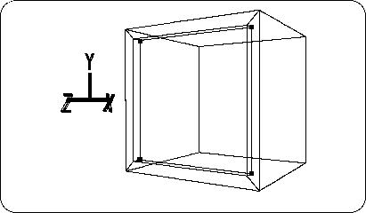
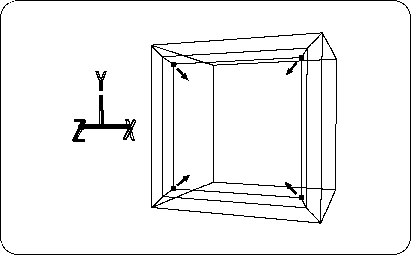

Return to previous page | Return to menu | Go to next page
If you select [TransZ] , the TAG can move in the Z-axis direction.
Now drag the mouse and move the selected TAG in the -Z axis direction as shown in the figure (Figure 2-16).

Caution
This operation is called “extrusion of the surface” and is a technique that will be used frequently in the future.
Next, make this extruded surface smaller.
[Scale] Select the entire menu again, and press and drag the left and middle mouse buttons at the same time to reduce the extruded surface surrounded by TAG (Figure 2-17). .
